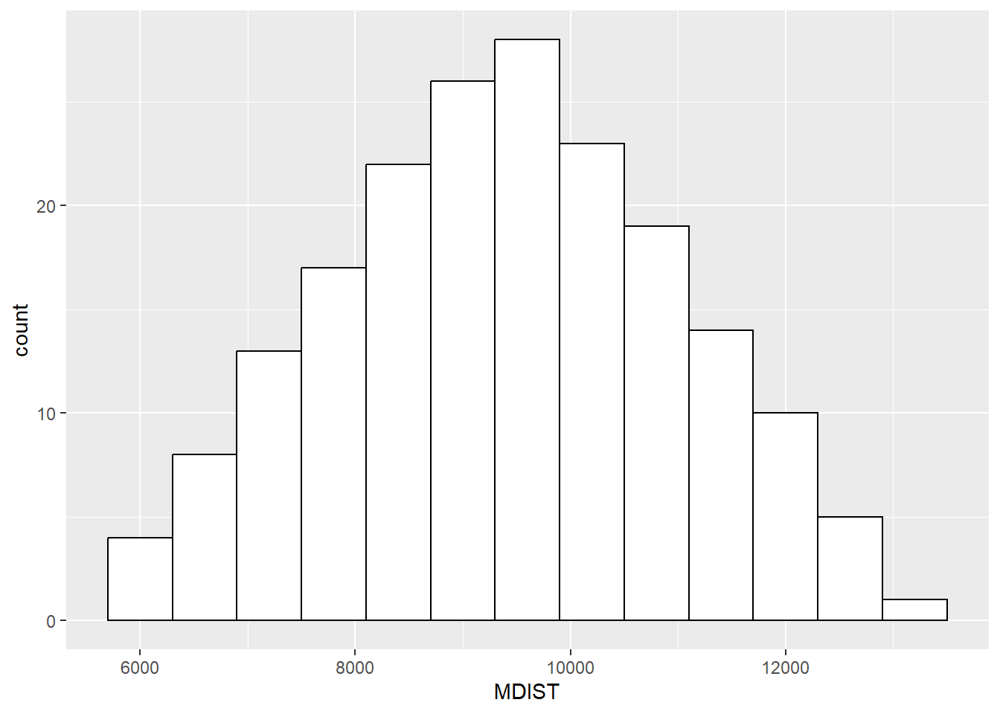
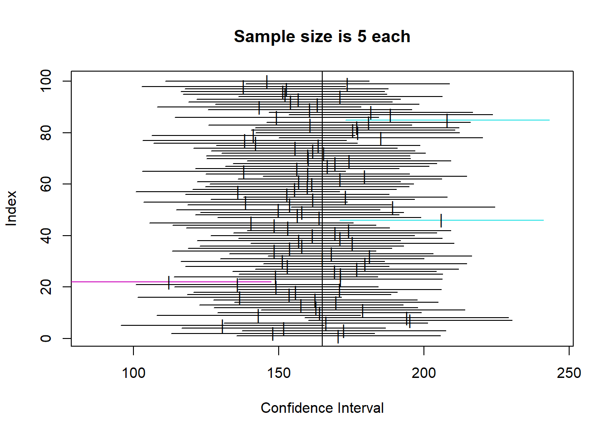
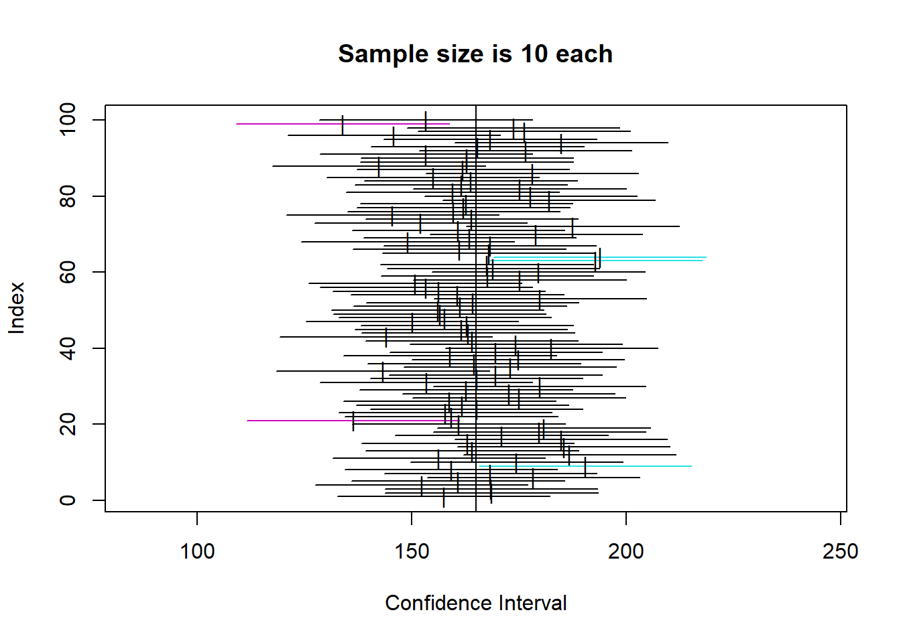
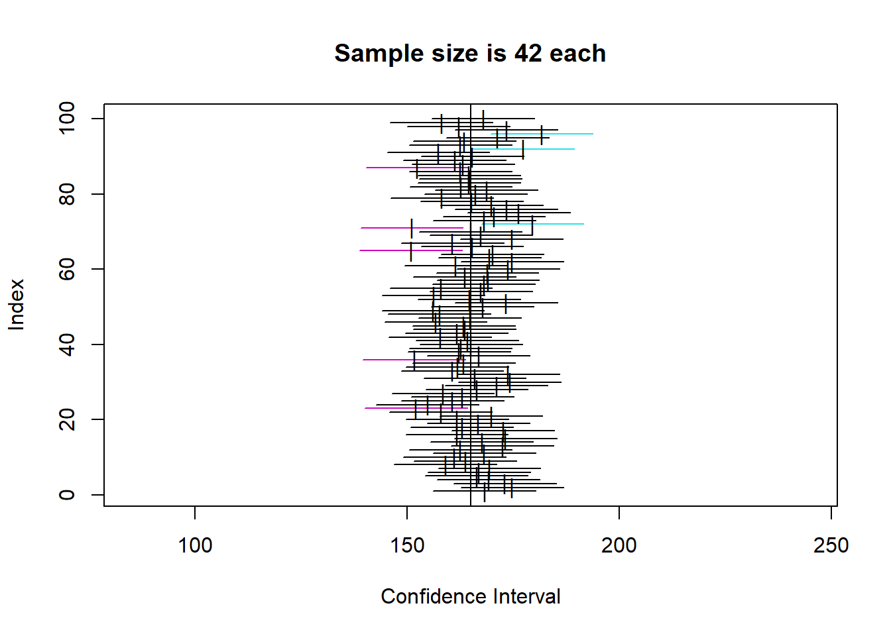
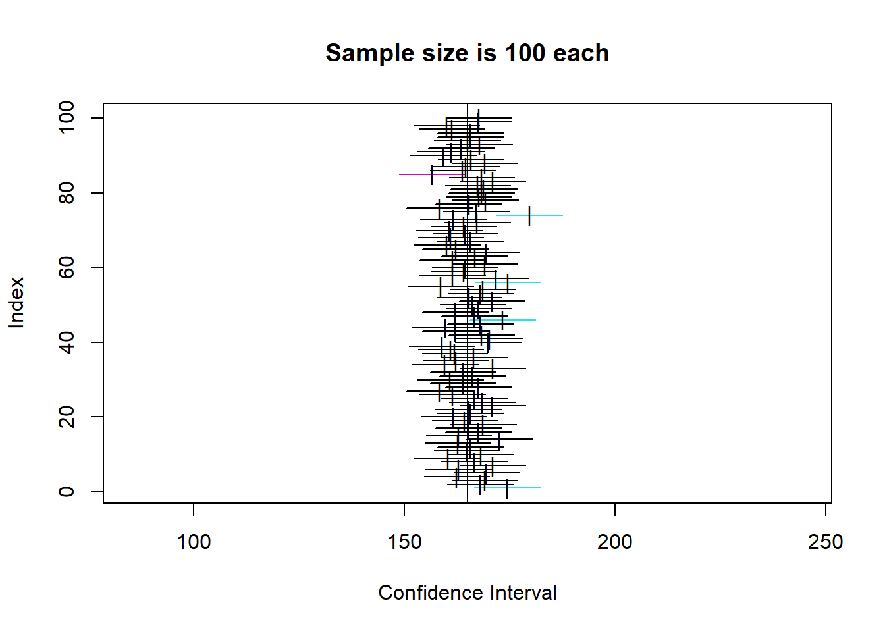

Chapter 8 Introduction to Statistics
This Chapter builds on the material in Lesson 9.
Here, we begin to apply our probability concepts to the task of statistical inference in the ‘classical’ way.
The theory explained and demonstrated here is the foundation of the (very large) majority of the quantitative business and management research you will read and use. Almost any time someone refers to a finding being (statistically) significant or a p-value, they are using this idea. However, a major weakness in many social science fields - business and management being one - is that a rather large proportion of researchers don’t actually understand the core principles of statistical inference, and are instead often just copying what other people have written, or told them to do.
So, if you can get your head around the next 3-4 chapters, you’ll be in a strong position to work with what’s already out there, and also do your own solid research.
8.1 The Distribution of Sample Means, and the Central Limit Theorem
The first thing to cover is an extension of the ideas in the last chapter about sampling distributions. It’s called the Central Limit Theorem, and is often the source of much angst in statistics students (including myself). However, here I am actually going to demonstrate how it works, and show how is actually quite amazing.
To do so, I will use a synthetic data set of monthly incomes from 20 people. Let us treat this data set as the population.
## # A tibble: 6 × 2
## Person Income
## <chr> <dbl>
## 1 A 5600
## 2 B 6000
## 3 C 6400
## 4 D 6800
## 5 E 7200
## 6 F 7600## Min. 1st Qu. Median Mean 3rd Qu. Max.
## 5600 7500 9400 9400 11300 13200## [1] 2366.432Above, you’ll see the important descriptive statistics, including the standard deviation of 2366.432. Let’s plot the frequency distribution, and once we do so we will find that it is essentially uniform - every value occurs once and only once in the population.

Now, what I am going to do is take a single random sample of 2 from that population. This sample is taken ‘without replacement’, if you are wondering, and so it is in essence exactly as if a researcher went into the field and took a sample from this population.
## [1] "One Random Combination of 2 of the 20 Income Values"## [1] 11600 7200Let’s take the mean of the sample:
## res1
## 1 11600
## 2 7200## [1] 9400The mean of the random sample of 2 will of course be different each time the sample is taken (e.g. when writing this text, the mean was 10600, but this may not be the same in the version you are reading!)
Just for reference, the mean of the population (remember, the 20 people) was 9400
So, let’s now do that for every possible combination of 2 values from this population.
Given there are n=20 values in the population, there are k=190 possible combinations of two values.
Note: This is not the same as bootstrapping - we are not sampling with replacement here. We are instead taking combinations. The thing to think about is that this is the equivalent of taking every single possible sample of 2 that you could take from this population.
Remember the ping-pong balls!
Let’s do it:
## [1] "Every Possible Combination of the 20 Income Values"## [,1] [,2]
## [1,] 5600 6000
## [2,] 5600 6400
## [3,] 5600 6800
## [4,] 5600 7200
## [5,] 5600 7600
## [6,] 5600 8000
## [7,] 5600 8400
## [8,] 5600 8800
## [9,] 5600 9200
## [10,] 5600 9600
## [11,] 5600 10000
## [12,] 5600 10400
## [13,] 5600 10800
## [14,] 5600 11200
## [15,] 5600 11600
## [16,] 5600 12000
## [17,] 5600 12400
## [18,] 5600 12800
## [19,] 5600 13200
## [20,] 6000 6400
## [21,] 6000 6800
## [22,] 6000 7200
## [23,] 6000 7600
## [24,] 6000 8000
## [25,] 6000 8400
## [26,] 6000 8800
## [27,] 6000 9200
## [28,] 6000 9600
## [29,] 6000 10000
## [30,] 6000 10400
## [31,] 6000 10800
## [32,] 6000 11200
## [33,] 6000 11600
## [34,] 6000 12000
## [35,] 6000 12400
## [36,] 6000 12800
## [37,] 6000 13200
## [38,] 6400 6800
## [39,] 6400 7200
## [40,] 6400 7600
## [41,] 6400 8000
## [42,] 6400 8400
## [43,] 6400 8800
## [44,] 6400 9200
## [45,] 6400 9600
## [46,] 6400 10000
## [47,] 6400 10400
## [48,] 6400 10800
## [49,] 6400 11200
## [50,] 6400 11600
## [51,] 6400 12000
## [52,] 6400 12400
## [53,] 6400 12800
## [54,] 6400 13200
## [55,] 6800 7200
## [56,] 6800 7600
## [57,] 6800 8000
## [58,] 6800 8400
## [59,] 6800 8800
## [60,] 6800 9200
## [61,] 6800 9600
## [62,] 6800 10000
## [63,] 6800 10400
## [64,] 6800 10800
## [65,] 6800 11200
## [66,] 6800 11600
## [67,] 6800 12000
## [68,] 6800 12400
## [69,] 6800 12800
## [70,] 6800 13200
## [71,] 7200 7600
## [72,] 7200 8000
## [73,] 7200 8400
## [74,] 7200 8800
## [75,] 7200 9200
## [76,] 7200 9600
## [77,] 7200 10000
## [78,] 7200 10400
## [79,] 7200 10800
## [80,] 7200 11200
## [81,] 7200 11600
## [82,] 7200 12000
## [83,] 7200 12400
## [84,] 7200 12800
## [85,] 7200 13200
## [86,] 7600 8000
## [87,] 7600 8400
## [88,] 7600 8800
## [89,] 7600 9200
## [90,] 7600 9600
## [91,] 7600 10000
## [92,] 7600 10400
## [93,] 7600 10800
## [94,] 7600 11200
## [95,] 7600 11600
## [96,] 7600 12000
## [97,] 7600 12400
## [98,] 7600 12800
## [99,] 7600 13200
## [100,] 8000 8400
## [101,] 8000 8800
## [102,] 8000 9200
## [103,] 8000 9600
## [104,] 8000 10000
## [105,] 8000 10400
## [106,] 8000 10800
## [107,] 8000 11200
## [108,] 8000 11600
## [109,] 8000 12000
## [110,] 8000 12400
## [111,] 8000 12800
## [112,] 8000 13200
## [113,] 8400 8800
## [114,] 8400 9200
## [115,] 8400 9600
## [116,] 8400 10000
## [117,] 8400 10400
## [118,] 8400 10800
## [119,] 8400 11200
## [120,] 8400 11600
## [121,] 8400 12000
## [122,] 8400 12400
## [123,] 8400 12800
## [124,] 8400 13200
## [125,] 8800 9200
## [126,] 8800 9600
## [127,] 8800 10000
## [128,] 8800 10400
## [129,] 8800 10800
## [130,] 8800 11200
## [131,] 8800 11600
## [132,] 8800 12000
## [133,] 8800 12400
## [134,] 8800 12800
## [135,] 8800 13200
## [136,] 9200 9600
## [137,] 9200 10000
## [138,] 9200 10400
## [139,] 9200 10800
## [140,] 9200 11200
## [141,] 9200 11600
## [142,] 9200 12000
## [143,] 9200 12400
## [144,] 9200 12800
## [145,] 9200 13200
## [146,] 9600 10000
## [147,] 9600 10400
## [148,] 9600 10800
## [149,] 9600 11200
## [150,] 9600 11600
## [151,] 9600 12000
## [152,] 9600 12400
## [153,] 9600 12800
## [154,] 9600 13200
## [155,] 10000 10400
## [156,] 10000 10800
## [157,] 10000 11200
## [158,] 10000 11600
## [159,] 10000 12000
## [160,] 10000 12400
## [161,] 10000 12800
## [162,] 10000 13200
## [163,] 10400 10800
## [164,] 10400 11200
## [165,] 10400 11600
## [166,] 10400 12000
## [167,] 10400 12400
## [168,] 10400 12800
## [169,] 10400 13200
## [170,] 10800 11200
## [171,] 10800 11600
## [172,] 10800 12000
## [173,] 10800 12400
## [174,] 10800 12800
## [175,] 10800 13200
## [176,] 11200 11600
## [177,] 11200 12000
## [178,] 11200 12400
## [179,] 11200 12800
## [180,] 11200 13200
## [181,] 11600 12000
## [182,] 11600 12400
## [183,] 11600 12800
## [184,] 11600 13200
## [185,] 12000 12400
## [186,] 12000 12800
## [187,] 12000 13200
## [188,] 12400 12800
## [189,] 12400 13200
## [190,] 12800 13200## [1] "Number of combinations without repetition"## [1] 190That was a rather long exhibit up there, but I wanted to show you that this was actually really done properly, and we have 190 combinations.
Next, let us create the means of each of the 190 combinations
## X1 X2 MDIST
## 1 5600 6000 5800
## 2 5600 6400 6000
## 3 5600 6800 6200
## 4 5600 7200 6400
## 5 5600 7600 6600
## 6 5600 8000 6800That’s just the first 6 (the head of the data set), but you can rest assured that there are 190 means created here.
OK, so here is the kicker. Let’s plot a histogram of these 190 means.
Remember, a histogram is a frequency distribution:

Well well well!
Even though the original population was a completely uniform distribution with a mean of 9400, the distribution of all of the sample means looks quite a lot like a normal distribution / bell curve!
Let’s overlay one on it as well to make the point…

Further, let’s take the mean of those means…
## Min. 1st Qu. Median Mean 3rd Qu. Max.
## 5800 8200 9400 9400 10600 13000Hello! It turns out, the mean of those means is the population mean!!!
This, in a demonstration, is the central limit theorem.
Let’s move back to the slides to talk about this some more.
8.2 Demonstrating Confidence Intervals
Below I will demonstrate the idea of confidence intervals as a measure of precision, and at the same time help to really lock in the correct interpretation of what a confidence interval really means.
To do so, I will continue the in-class example of WBS Ph.D. graduate salaries. However, here, I will simulate the population distribution that we have sampled from. Let’s recap:
Sample size (N) = 42
Sample mean = 170,000
Sample SD = 46617.4
I will simulate a population distribution that this sample could quite conceivably have come from. It will have the following features:
Population mean = 165,000
Population SD = 40000
I will also assume that the population distribution is normal. That is, the distribution of all business and management Ph.D. starting salaries is shaped like a bell curve - the normal distribution (remember birth weights from the last chapter). This is a reasonable assumption in my view, given the features of the phenomena we are investigating.
The important thing to remember is not really the population distribution of salaries (which is just used here to simulate the population), but the sampling distribution of the means. Remember, the central limit theorem shows us that whatever the shape of the population distribution we are sampling from, the sampling distribution of the means will take the form of a normal distribution, with a mean of the population mean.
So, below, I will simulate the population, and then calculate 100 confidence intervals for 4 different sample sizes (5, 10, 42, 100), to demonstrate two things:
- How confidence intervals get more precise as sample size increases, and
- How to interpret your specific confidence interval as simply one possibility of many.

So, you can see that the confidence intervals for each of the 100 samples at a given sample size all cluster around the mean, but are wider as sample size is lower. That makes sense intuitively.
Looking specifically at our example N of 42, we can estimate which one of the 100 that might be, and see how the CI for sample means of about that size does include the real population mean of 165. You can also see there are a number of coloured CIs which do not include the sample mean. This shows how to interpret a CI.
Specifically, your actual sample is one of a very large amount of possible samples from the population (here we took 100 but we could have taken many more). The CI calculation essentially creates a CI with the width so that, out of 100 random samples, approximately 95 will actually contain the true population mean.
As such, we can see how it is clearly a measure of the precision of the estimate. For a compelling visualization of this, look how wide the CIs for N=5 are.
One thing to remember though is the ‘law of large numbers’ here. You might notice that not all of the CI plots contain exactly 5 intervals that do not contain the mean. This is analagous to the idea of coin flipping - it’s just probability over very large numbers of trials, not saying that ‘out of every 100, exactly 5 will not include the population mean’. But, over a very large number of trials, we can expect the amount of intervals that do not include the mean to tend towards 5%, in the same way that over a large number of coin flips, the proportion of heads tends towards 50%.